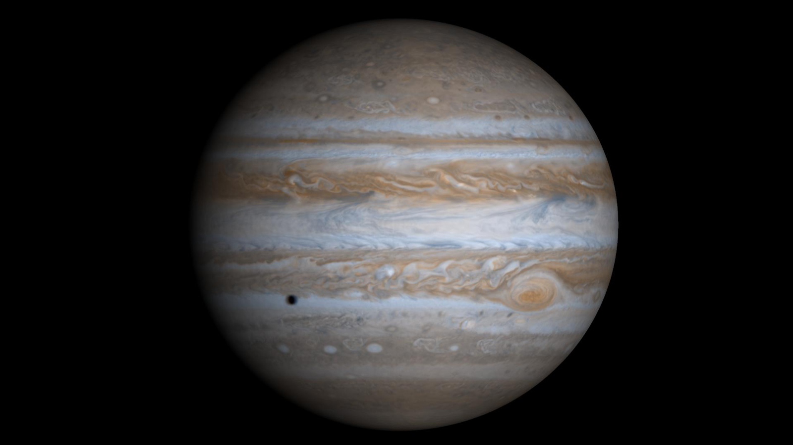

Jupiter

Jupiter is the 5th closest planet to the Sun. It is the most massive planet in the Solar System - more than 1200 Earths would fit inside Jupiter.
It can be seen with the naked eye in the night sky as it is the 4th brightest object in the Solar System.
Jupiter has a thick atmosphere and a striped appearance due to its weather systems stretching into bands across the planet because of its rapid rotation.
Facts about Jupiter
- Jupiter has the largest moon in the Solar System
- It has a huge storm that has been active for over 350 years, called the Great Red Spot
- Jupiter has the most rapid rotation in the Solar System so it has the shortest days
- Jupiter has rings, formed from dust particles
Saturn
Saturn is the 6th closest planet to the Sun. It is the 2nd biggest planet in the Solar System and is the furthest planet from the Sun that can be seen with the naked eye.
Like Jupiter, Saturn's weather systems are stretched into bands across the planet due to it's rapid rotation, creating a striped pattern. During the next 100 million years, Saturn's rings will disappear as the planets gravity pull them inwards and melt the water-ice fragments.
Facts about Saturn
- The ammonia in its atmosphere makes Saturn have a yellow appearance
- Saturn's rings are composed mostly of water-ice fragments
- It has 150 natural satellites, but only 62 are confirmed as moons
- It is the flattest planet in the Solar System due to its fast rotation and low density
Uranus

Uranus is the 7th closest planet to the Sun. It is the coldest planet in the Solar System, has winds up to 560-mph and is a blue-green color because the methane in its upper atmosphere absorbs red light.
Uranus is relatively featureless, though it has thin, dark rings and is tipped on its side, with an axis of rotation almost in its orbital plane. This suggests Uranus suffered a large impact at some point in its past.
Facts about Uranus
- Uranus was the first planet to be discovered by a telescope
- Uranus completes one orbit of the Sun every 84 Earth years
- Voyager 2 is the only spacecraft to have flown by Uranus
- Uranus is the coldest planet in the Solar System
Neptune

Neptune is the furthest planet from the Sun, however is only the 2nd coldest planet in the Solar System, after Uranus. This is because Neptune generates more internal heat and has slightly more methane in its atmosphere so it is more efficient at retaining heat.
Out of all the planets in the Solar System, Neptune has the longest orbital period around the Sun, with 1 year on Neptune lasting 165 Earth years.
Facts about Neptune
- Neptune has six thin, dark rings made from dust and dark organic compounds
- It is the smallest Jovian planet
- Neptune has and active storm system called the Great Dark Spot
- Voyager 2 is the only spacecraft to have flown by Neptune